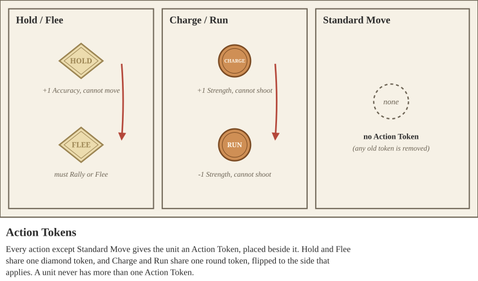

There are five Movement Actions, but only four of them grant a movement Action Token: Run, Charge, Hold, and Flee. Standard Move does not grant any Action Token. When a unit takes a Movement Action, it should remove whatever Action Token it previously had (if any) and then place the corresponding token for its new action. A Unit may never have more than one Action Token, and in several instances it may lose Action Tokens (or ignore certain effects due to game rules and special abilities). Units do not begin play with any Action Tokens, unless otherwise stated.
Locked in Combat. A unit that is Locked in Combat when it activates takes no action, unless a rule says otherwise (such as the Disengage Command card), and a unit with a Flee Action Token still takes the Flee action. It cannot move, and it ignores rules that would force it to act, such as the Charge required by Run Them Down. If it has a Hold Action Token, it may still throw Throwing Weapons at enemies it is Locked in Combat with (see Throwing Weapons), and then removes the token; otherwise it cannot shoot. A unit leaves the Melee only through a Combat Move, by Fleeing, or when no enemy unit is left in base contact with it.
